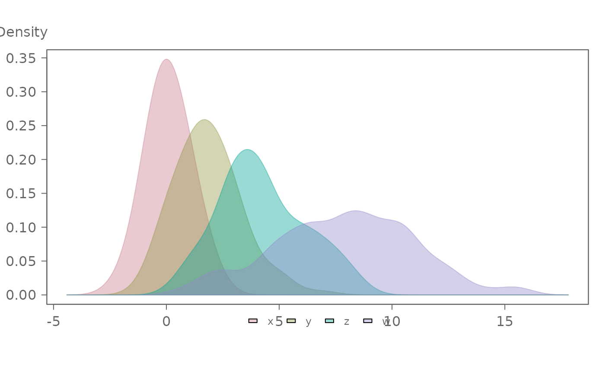
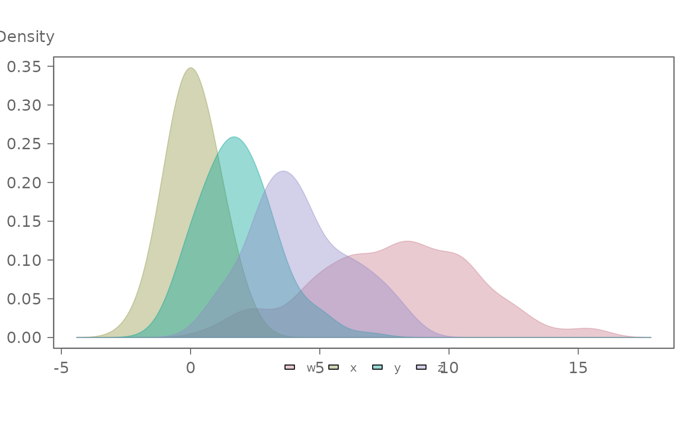
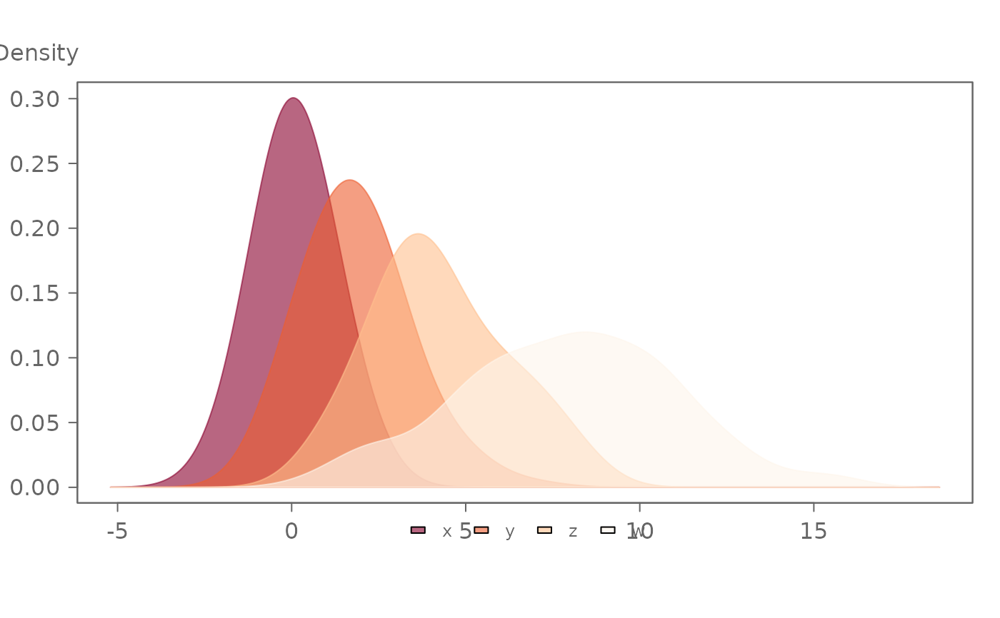
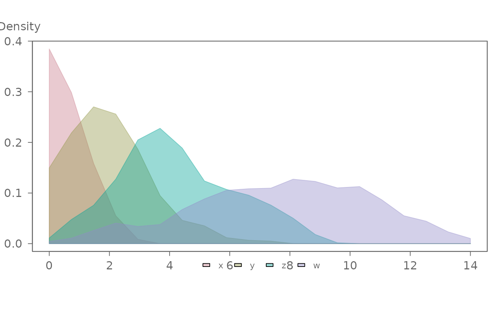
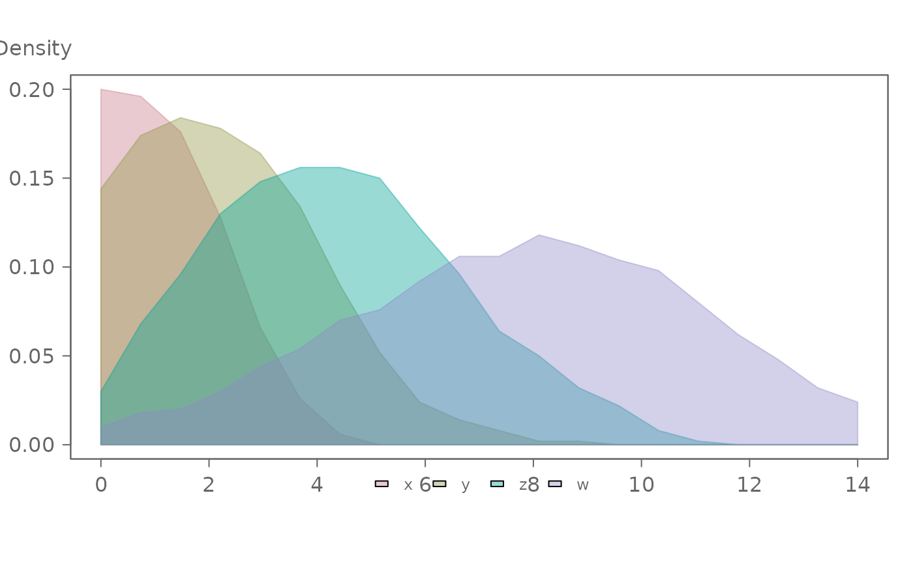

eda_mdens generates overlapping density distributions for
multiple batches.
Usage
eda_mdens(
...,
p = 1L,
tukey = FALSE,
base = exp(1),
grey = 0.6,
alpha = 0.4,
legend = TRUE,
title = NULL,
show.par = TRUE,
kernel = "gaussian",
cols = NULL,
outline = FALSE
)Arguments
- ...
Numeric vectors representing individual batches, or a dataframe and its continuous and categorical variables. Can also contain arguments passed to
stats::density()likebw,n,from,to.- p
Power transformation to apply to all values.
- tukey
Boolean determining if a Tukey transformation should be adopted (FALSE adopts a Box-Cox transformation).
- base
Base used with the log() function if
p = 0.- grey
Grey level to apply to plot elements (0 to 1 with 1 = black).
- alpha
Fill transparency (0 = transparent, 1 = opaque).
- legend
Boolean determining if a legend should be added to the plot.
- title
Plot title. Defaults to
"NULL".- show.par
Boolean determining if parameters such as power transformation should be displayed.
- kernel
The kernel to be used. Can be one of the kernels supported by
stats::density("gaussian", "epanechnikov", "rectangular", "triangular", "biweight", "cosine", "optcosine"), or "sliding" for a custom sliding-window rectangular kernel estimator.- cols
A vector of colors for the density fills or one of the R built-in color palettes (see
hcl.pals()). If NULL, colors default to "Dark 3".- outline
Boolean determining if outline should be shown without transparency.
Details
This function extends eda_dens to allow for the comparison of more
than two batches. Input can be a list of numeric vectors, individual
numeric vectors passed directly, or a dataframe in long format.
Examples
# Example using individual vectors as input. A
# bandwidth of 0.5 is used for the density plots
# Plots are ordered following input order
set.seed(123)
x <- rnorm(100, 0, 1)
y <- rnorm(100, 2, 1.5)
z <- rnorm(100, 4, 2)
w <- rnorm(100, 8, 3)
eda_mdens(x, y, z, w, bw = 0.7)

# Example using a dataframe as input
# Plots are ordered alphabetically
df <- data.frame( values = c(x, y, z, w),
group = rep(c("x","y","z","w"), each = 100))
eda_mdens(df, values, group, bw=0.7)

# To specify an order when using a dataframe,
# use factors
df$group <- factor(df$group, levels = c(c("x","y","z","w")) )
eda_mdens(df, values, group, bw=0.7)
 # Colors can be passed as a vector of color names or as a predefined
# hcl.pals() palette name. The fill transparency can be controlled with the
# alpha argument.
eda_mdens(df, values, group, cols = "OrRd", alpha = 0.6)
# Colors can be passed as a vector of color names or as a predefined
# hcl.pals() palette name. The fill transparency can be controlled with the
# alpha argument.
eda_mdens(df, values, group, cols = "OrRd", alpha = 0.6)

# Most density() arguments can be passed via ...
eda_mdens(df, values, group, bw = 0.5, n = 20, from=0, to=14,kernel="cosine")

# A built-in custom "sliding" window kernel is also available.
# Note that the bandwidth for "sliding" is in the variable's units and not
# the fraction of observations as implemented by density()
eda_mdens(df, values, group, bw = 5, n = 20, from=0, to=14, kernel="sliding")
